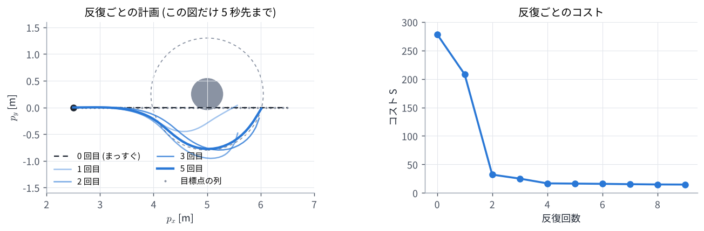
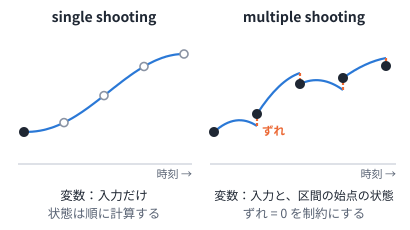
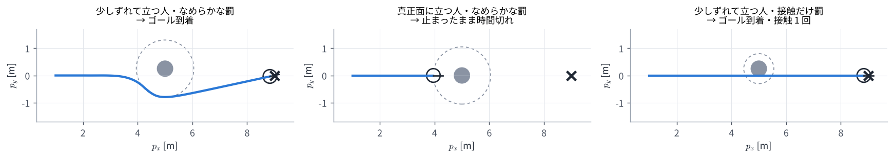

04. 非線形 MPC (NMPC)
この章のゴール
- 非線形モデルの MPC を、残差の 2 乗和としてガウス・ニュートン法で解ける
- ヤコビアンを連鎖律で作れる: \(\partial x_t / \partial u_s = A_{t-1} \cdots A_{s+1} B_s\)
- single shooting と multiple shooting の違い、SQP と RTI の考え方が分かる
- 障害物のまわりで局所解に止まる理由と、微分できないコストが効かない理由が分かる
つながり 02 章 のガウス・ニュートン法を、01 章 の 2 輪ロボットの最適制御問題に当てはめます。03 章 の QP は、SQP の中で毎回解く小さな問題として出てきます。
0. この章で使う記号
| 記号 | 意味 |
|---|---|
| \(A_t = \partial f / \partial x\), \(B_t = \partial f / \partial u\) | モデルを \((x_t, u_t)\) で微分した行列 (今の案のまわりでの線形化) |
| \(U\) | 入力の列 (最適化の変数)。2 輪で \(N = 30\) なら 60 個 |
| \(r(U)\) | 残差ベクトル。コストは \(S(U) = \lVert r(U) \rVert^2\) |
| \(J = \partial r / \partial U\) | 残差のヤコビアン |
| \(d_{\mathrm{s}}\) | 安全距離 (人の中心から 1.05 m) |
1. 何が難しくなるのか
2 輪ロボットのモデルは \(\cos\theta\) と \(\sin\theta\) を含むので、未来の状態は入力の列の非線形な関数になります。そのため、03 章 のようにコストを 2 次関数に直して一発で解くことはできません。
そこで、今の案のまわりで線形に近似し、03 章のように解いて案を直す、をくり返します。これが 02 章のガウス・ニュートン法そのものです。
2. 残差を並べる
01 章のコストを、残差の 2 乗の和に書き直します。各時刻の残差を縦に並べたものが \(r(U)\) です。
1 行目は \(t = 1, \dots, N\)、3 行目は \(t = 0, \dots, N-1\) の全時刻ぶんを縦に並べます。4 行目 (人の罰) は、人の安全距離の内側にいる時刻だけ入れます。外にいる時刻は罰が 0 だからです。こうすると \(S(U) = \lVert r(U) \rVert^2\) が、ちょうど 01 章のコストになります。演習 4 のある場面では、残差は 92 個 (行)、変数は 60 個 (列) でした。
3. ヤコビアンを連鎖律で作る
ガウス・ニュートン法には \(J = \partial r / \partial U\) が必要です。残差は位置 \(p_t\) から計算するので、「入力 \(u_s\) を少し変えると、後の状態 \(x_t\) がどれだけ変わるか」(感度) が分かればよいです。
3.1 変化が伝わる様子
入力 \(u_s\) を \(\delta u_s\) だけ変えると、
- 次の状態は \(\delta x_{s+1} = B_s\, \delta u_s\) だけ変わる
- そこから先は、モデルを通るたびに \(\delta x_{t+1} = A_t\, \delta x_t\) と伝わる
ので、
となります。後の入力は前の状態に影響しないので \(s \ge t\) では 0 です。これは 03 章 の \(\Gamma\) のブロック \(A^{t-s-1}B\) と同じ形で、違いは \(A_t\), \(B_t\) が時刻ごとに変わることだけです。
2 輪ロボットのモデル \(f\) (01 章の式 (1)) を微分すると、次のようになります。
3.2 数値で確かめる
\(\theta = 0\)、\(v = 1\)、\(\omega = 0\)、\(\Delta t = 0.1\) のまわりで、\(u_0\) が 2 ステップ後の \(x_2\) に与える影響を計算します。
2 列目を読むと「\(\omega_0\) を 1 rad/s 増やすと、2 ステップ後の \(p_y\) が 0.01 m 増える」です。\(\omega_0\) で向きが 0.1 rad 変わり、そのあと 0.1 m 進むので、横に \(0.1 \times 0.1 = 0.01\) m ずれる、という意味です。演習 4 では、この方法で作った \(J\) と数値微分の差が \(1.8 \times 10^{-8}\) で、正しく作れていることを確かめています。
4. ガウス・ニュートン法で解く
あとは 02 章と同じです。前回の答えを 1 ステップずらした入力の列から始めて、次をくり返します。
# U = (前回の答えを 1 ステップずらしたもの)
for it in range(iters):
X = rollout(x_hat, U) # 予測
r, J = residual_and_jacobian(X, U) # 残差と、式 (1) で作ったヤコビアン
H, g = J.T @ J, J.T @ r
while True: # LM 法: 悪くなったら慎重に
dU = solve(H + mu * diag(H), -g)
U_new = clip(U + dU, u_min, u_max) # 入力の上下限で切る
if cost(U_new) < cost(U):
U, mu = U_new, mu / 3
break
mu = mu * 4
send(U[0]) # 最初の 1 手だけ実行
U = shift(U)
演習 4 で、人の 2.5 m 手前から、まっすぐ進む案を出発点にして反復した様子です (この図だけ、人の向こうまで見えるようにホライズンを 5 秒にしています)。

コストは 278.6 → 208.1 → 32.1 → 25.1 → 16.7 と下がり、計画は人をよける形に変わっていきます。実際の制御では、前回の答えから始めるので出発点がすでに答えに近く、1 周期に数回の反復で足ります。
5. 変数の置き方: single shooting と multiple shooting

| single shooting | multiple shooting | |
|---|---|---|
| 変数 | 入力の列だけ | 入力の列と、区間ごとの始点の状態 |
| 状態 | モデルで順に計算する (1 本につながる) | 変数なので最初はつながっていなくてよい。「区間の終わり = 次の始点」を制約にする |
| 良い点 | 変数が少なく、いつもモデルどおりの軌道 | 最初の入力の影響が長く伝わらないので数値的に安定。状態の初期値を直接与えられる |
| 使われ方 | この教材のデモ・演習 | acados など、NMPC のソルバーの標準 |
single shooting では、最初のほうの入力が後の状態すべてに効くので、ホライズンが長いと \(J\) の値の大きさがばらばらになり、解きにくくなります。
6. SQP: 毎回、QP を解いて直す
入力の上下限や状態の制約をきちんと守るには、各反復で「今の案のまわりで近似した QP」を解きます。今の案を \((\bar x_t, \bar u_t)\) として、直す量 \((\Delta x_t, \Delta u_t)\) を変数にした QP です。
- 1 行目: コストの 2 次近似。\(H_t\) にガウス・ニュートン近似 \(J_t^\top J_t\) を使えば、2 階微分がいらず、必ず凸な (確実に解ける) QP になる
- 2〜3 行目: モデルの線形化。\(f(\bar x_t, \bar u_t) - \bar x_{t+1}\) は multiple shooting のつなぎ目のずれで、これも 0 に向かって直される
- 4 行目: 制約 \(g \le 0\) の線形化
この QP を解いて案を直す、をくり返すのが SQP (逐次 2 次計画法) です。制約がなければ、ガウス・ニュートン近似の SQP は 4 節のガウス・ニュートン法と同じものです。この QP は時刻ごとのブロックが鎖のようにつながった形なので、HPIPM などの専用ソルバーでホライズン長に比例する時間で解けます。SQP の代わりに、内点法 (IPOPT など) で元の問題をそのまま解く方法もあります。
7. RTI: 1 周期に 1 回だけ直す
Real-Time Iteration (RTI) は、制御の周期ごとに SQP の反復を 1 回だけ行い、続きは次の周期に持ち越す方法です。
- 前回の答えをずらした出発点はすでに答えに近いので、1 回でも十分に追いつける
- 状態を測る前に、線形化と QP の準備を済ませておく (準備段階)。測ったら QP を解くだけにして (フィードバック段階)、計算の遅れを小さくする
この教材のデモの NMPC は、1 周期に 3 回 (既定) だけガウス・ニュートン法を回しており、RTI に近い使い方です。
8. 苦手なこと
演習 4 で、毎周期 3 回反復しながら 3 つの場面を走らせた結果です。

| 場面 | 結果 |
|---|---|
| 少しずれて立つ人・なめらかな罰 | 10.4 秒でゴール。人との最小のすき間 0.47 m |
| 真正面に立つ人・なめらかな罰 | 人の手前で止まり、25 秒で時間切れ |
| 少しずれて立つ人・接触だけ罰 | 9.8 秒でゴールに着くが、途中で 1 回接触 (すき間 −0.30 m) |
8.1 局所解: 真正面の人の前で止まる
人がちょうど真正面にいると、コストは左右対称です。まっすぐ進む案のまわりでは、左へずれても右へずれてもコストの変わり方が同じなので、勾配の横向きの成分がちょうど 0 になります。ガウス・ニュートン法は勾配と曲がり具合だけを見るので、左右どちらへよけるかを決められません。残る選択肢は「速度を落として安全距離の手前で止まる」で、これがその場の局所解 (近くでいちばん良い答え) になります。
制約として扱う SQP でも同じことが起きます。「人から \(d_{\mathrm s}\) 以上離れる」は、左右どちらからよけてもよい (凸でない) 制約で、SQP では今の位置で線を引いた半平面に置きかえます。
\(n_t\) は、人から今の案の位置 \(\bar p_t\) へ向かう単位ベクトルです。どちら側をよけるかは出発点で決まり、反対側のほうが良くてもそちらへは移れません。人が真正面にいると \(n_t\) が進行方向と平行になり、横へ動く理由がなくなります。
8.2 微分できないコスト: 接触だけを罰すると気づかない
「接触したら 1 ステップごとに +1000、しなければ 0」という段差のコストは、ほとんどの場所で傾きが 0 です。ガウス・ニュートン法は傾きから改善の向きを決めるので、この罰を見ることができず、人がいないかのように進んで接触します。
8.3 対策の例
- 左右それぞれの初期値から解いて、良いほうを使う
- 段差ではなく、なめらかな罰 (01 章 2.1 節の第 3 項のような形) にする
- サンプリングで良い初期値を見つけ、NMPC で仕上げる (MPPI → 05 章)
下のデモで確かめてください。左が NMPC、右が MPPI です。「真正面の人」では NMPC が止まり、MPPI は回り込みます。
演習 4
python exercises/ex04_nmpc.py
ヤコビアンの確認 (3 節)、反復ごとの計画 (4 節)、3 つの場面の閉ループ (8 節) を出力し、図を 2 枚作ります。コントローラ本体は exercises/robot2d.py の NMPC クラスです (HTML 版のデモと同じパラメータ)。
試してみること:
NMPC(scene, mode, iters=3)のitersを 1 や 10 にすると、動きはどう変わるか- 真正面の場面で、最初の入力の列
V,Wに少し左へ曲がる値を入れると、止まらずによけられるか
理解度チェック
- \(\partial x_3 / \partial u_0\) を \(A_t\) と \(B_t\) で書くと? \(u_5\) は \(x_3\) に影響するか?
- 3.2 節の例で、\(v_0\) を 1 m/s 増やすと \(x_2\) はどう変わるか?
- single shooting と multiple shooting の違いは何か?
- RTI は 1 周期に何をするか。なぜそれで足りるのか?
- 真正面に立つ人の手前で NMPC が止まるのはなぜか?
- 「接触したら +1000」のコストを、ガウス・ニュートン法が無視してしまうのはなぜか?
答えの例
- \(\partial x_3 / \partial u_0 = A_2 A_1 B_0\)。\(u_5\) は \(x_3\) より後の入力なので影響しない (\(\partial x_3 / \partial u_5 = 0\))。
- \(A_1 B_0\) の 1 列目 \((0.1, 0, 0)\) より、\(p_x\) だけが 0.1 m 増える (0.1 秒間に 0.1 m 余分に進む)。
- single shooting は入力だけが変数で、状態はモデルで順に計算する。multiple shooting は区間の始点の状態も変数にし、つなぎ目が一致することを制約にする。後者のほうが数値的に安定。
- SQP の反復を 1 回だけ行い、続きは次の周期に持ち越す。前回の答えをずらした出発点がすでに答えに近いので、1 回の改善でも追いつける。
- 左右対称なので、まっすぐの案のまわりで勾配の横向きの成分が 0 になり、左右どちらへよけるかを決められない。速度を落として手前で止まる案が局所解になる。
- 段差のコストはほとんどの場所で傾きが 0 なので、勾配と曲がり具合から作る改善の向きに、接触を避ける成分が入らないから。
もっと知りたい人へ
- M. Diehl, H. G. Bock, J. P. Schlöder, "A Real-Time Iteration Scheme for Nonlinear Optimization in Optimal Feedback Control," SIAM J. Control and Optimization, 43(5), pp. 1714–1736, 2005. RTI の元の論文。
- S. Gros, M. Zanon, R. Quirynen, A. Bemporad, M. Diehl, "From linear to nonlinear MPC: bridging the gap via the real-time iteration," International Journal of Control, 93(1), pp. 62–80, 2020. 線形 MPC から RTI までのつながり。
- R. Verschueren et al., "acados—a modular open-source framework for fast embedded optimal control," Mathematical Programming Computation, 14, pp. 147–183, 2022.
- J. A. E. Andersson, J. Gillis, G. Horn, J. B. Rawlings, M. Diehl, "CasADi: a software framework for nonlinear optimization and optimal control," Mathematical Programming Computation, 11, pp. 1–36, 2019.